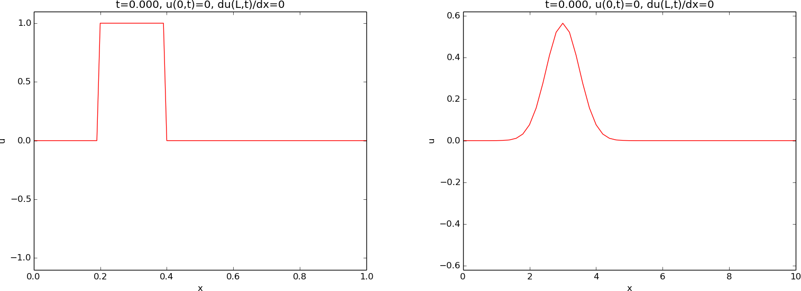

Mathematical model and solution method
We solve a one-dimensional, linear, constant-coefficient
wave equation by an explicit finite difference method.
The wave equation problem
The standard, linear wave equation in a homogeneous one-dimensional
medium reads
$$
\begin{equation}
\frac{\partial^2 u}{\partial t^2} =
c^2 \frac{\partial^2 u}{\partial x^2}, \quad x\in (0,L),\ t\in (0,T]\tp
\tag{1}
\end{equation}
$$
The unknown function \( u \) depends on space \( x \) and time \( t \): \( u=u(x,t) \).
The need for boundary conditions in the wave equation.
Four initial and boundary conditions must be specified to have a
unique solution:
- Initial condition for \( u(x,0) \)
- Initial condition for \( u_t(x,0) \)
- Boundary condition at \( x=0 \)
- Boundary condition at \( x=L \)
Initial conditions
Most demonstrations will start with an initial profile of \( u \),
$$ u(x,0) = I(x), $$
being at rest, i.e.,
$$ \frac{\partial}{\partial t}u(x,0) = 0\tp $$
Two initial profiles will be considered:
- a plug as to left in Figure 1
- a Gaussian peak as to the right in Figure 1
Figure 1: Examples on initial conditions.

Boundary conditions
Fixed \( u \)
At \( x=0 \) we will sometimes use the condition \( u=0 \), often known as
a homogeneous
Dirichlet condition. This condition will
mirror the wave.
Reflecting condition
At \( x=0 \) and/or \( x=L \) we will apply a
reflecting or
no-flux condition:
$$
\begin{equation} \frac{\partial u}{\partial x}=0\tp
\tag{2}
\end{equation}
$$
This condition reflects the wave into the domain again, as a surface wave
hits a vertical wave, runs up to the double amplitude, and propagates
back into the domain again. This type of boundary condition is also
referred to as a
Neumann condition.
Feeding a wave from the boundary
We shall demonstrate the effect of moving \( u \) at the boundary \( x=0 \) to
feed the domain with an incoming wave. The boundary condition then reads
$$ u(0,t) = U_0(t),$$
for some given function \( U_0(t) \). A particular choice in a later
demonstration is a sine function that is active in three different
time intervals:
$$ U_0 (t) = \left\lbrace\begin{array}{ll}
\frac{1}{4}\sin(6\pi t),& t\in T_1\hbox{ or } t\in T_2\hbox{ or } t\in T_3\\
0,& \hbox{otherwise}
\end{array}\right.
$$
where \( T_1=[0, \frac{1}{6}] \), \( T_2=[\frac{3}{4}, \frac{5}{6}] \),
and \( T_3=[\frac{3}{2},\frac{11}{6}] \). The movement of \( u \) at the
boundary will produce a wave that is by the PDE transported to
the right into the domain.
Open boundary condition
Very often one wants to let a wave travel through the boundary without
being disturbed. Such a condition is called an
open boundary condition,
or a
radiation condition, or an
artificial boundary condition:
$$
\begin{align}
\frac{\partial u}{\partial t} - c\frac{\partial u}{\partial x} &= 0,\quad x=0,
\tag{3}\\
\frac{\partial u}{\partial t} + c\frac{\partial u}{\partial x} &= 0,\quad x=L\tp
\tag{4}
\end{align}
$$
These conditions work exactly in 1D, but are challenging to generalize
and implement in 2D and 3D.
Periodic boundary condition
When following a wave motion over large distances, it is desireable to
let a wave travel out of the right domain
and at the same time feed the wave back into the domain from the left.
This approach avoids a very large domain where nothing happens in
the majority of the domain. A
periodic boundary condition at \( x=0 \)
can be used to feed the signal traveling out at \( x=L \) into the domain:
$$
\begin{equation}
u(0,t) = u(L,t)\tp
\tag{5}
\end{equation}
$$
The condition at \( x=L \) is then an open boundary condition
(4).
Numerical solution method
The wave equation is solved by an explicit finite difference method,
which is of second-order in space and time. A uniform mesh with
spacing \( \Delta x \) and \( \Delta t \) is used in space and time,
respectively. The no-flux or Neumann boundary conditions are implemented
by modifying the computational stencil at the boundary. The
open boundary conditions are implemented by forward in time,
upstream in space finite differences, which exactly let the wave out
of the boundary. More details are found in
Appendix: Numerical solution method.
Parts of the computer code are explained in
Appendix: Computer code.